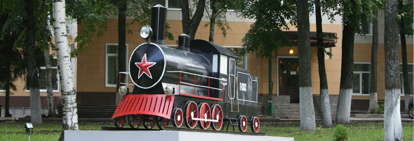

Современная клиника европейского уровня
В состав клиники входят три поликлиники, дневной стационар, 7 медицинских центров, 14 круглосуточных специализированных отделений, 7 параклинических служб, амбулатория на станции Ростов, 2 врачебных здравпункта, 5 фельдшерских здравпунктов, 4 медпункта. Больница оснащена современной медицинской техникой и оборудованием, позволяющими в кротчайшие сроки проводить диагностику и лечение пациентов с разными заболеваниями на самом современном уровне.
В больнице работают 1200 сотрудников, в том числе 4 доктора и 23 кандидата медицинских наук, 4 сотрудника имеют звание «заслуженный врач РФ».
В клинике используются новейшие и уникальные медицинские технологии при хирургическом лечении заболеваний щитовидной железы, эндокринных болезнях, патологии уха, горла и носа, болезнях вен нижних конечностей, заболеваний молочных желез и др.
Многолетние традиции, профессионализм врачей ставят ее в ряд наиболее авторитетных клиник ОАО «РЖД», города Ярославля и области, Центрального и Северо-Западного регионов страны.
Больница является клинической базой для семи кафедр Ярославского Государственного медицинского университета. Это кафедры:
- - Клинической фармакологии с курсом ИПДО
- - Поликлинической терапии и клинической лабораторной диагностики с курсом общеврачебной практики
- - ИПДО
- - Терапии педиатрического факультета
- - Хирургических болезней педиатрического факультета
- - Нервных болезней с медицинской генетикой и нейрохирургией
- - Оториноларингологии
- - Стоматологии
Сотрудники больницы активно участвуют в научной и образовательной деятельности. Ежегодно защищаются кандидатские и докторские диссертации.
В последние годы больница занимает одно из ведущих мест по внедрению высокотехнологичных методов диагностики и лечения.
Только в период с 2010 по 2011 г.г. приобретено новое оборудование, позволяющее оказывать медицинскую помощь на самом современном уровне. Среди последних приобретений больницы маммограф «Mammomat 3000 Nova» (Siemens, Германия), аппарат рентгеновский ангиографический BV Libra(Philips,Нидерланды), аппарат рентгеновский панорамный стоматологический Orthralix x9200DDE (США), аппарат радиохирургический АТМОS RS 221 с (Германия), прибор хирургический SINUSCAN (Германия), термоциклер для амплификации нуклеиновых кислот 1000, с принадлежностями (США), Термостат твердотельный программируемый малогабаритный ТТ-11 «ДНК-техн.», электрокардиограф 6-ти канальный Cardioline (Германия), аппарат ультразвуковой Acuson x300 Premium, ,аппарат для радиочастотной облитерации VNUS RFG (Германия).
В стационаре созданы комфортные условия для пациентов, имеется 6 сервисных палат с повышенным уровнем комфортности, VIP-палаты европейского уровня, где проводится обследование и лечение пациентов в максимально короткие сроки.
Одним из приоритетных направлений является диагностика и лечение пациентов с патологией эндокринной системы, где применяются щадящие, малоинвазивные методики с использованием ультразвуковой навигации.
Больница является одним из авторитетнейших центров России по разработке уникальных методов «хирургии без скальпеля». Она обладает самым большим опытом хирургического лечения пациентов с патологией щитовидной железы в регионе и одним из самых больших в России и во всем мире опытом по комбинированному использованию склеротерапии и лазерной деструкции в лечении узлового зоба.
За последние годы внедрены:
- - новые методы лабораторной диагностики (фармакогенетическое тестирование, ПЦР-диагностика, иммунологические и другие виды исследований, диагностика остеопороза);
- - лучевая диагностика - маммография и магнитно-резонансная томография, малоинвазивные и традиционные травматологические хирургические, урологические вмешательства под рентгенотелевизионным контролем с использованием С-дуги BV LIBRA (Philips,Нидерланды);
- - ультразвуковая диагностика с использованием режима серой шкалы, тканевой гармоники, спектральной допплерографии, цветового допплеровского картирования, энергетического картирования, трехмерной реконструкции изображения с использованием трансабдоминальных, трансректальных, трансвагинальных датчиков;
- - склерооблитерация жидкостных образований щитовидной железы, перфорантных, варикозно-расширенных вен нижних конечностей, лазерная аблация узловых образований щитовидной железы;
- - функциональная диагностика - чреспищеводное электрофизиологическое исследование, вибротестирование, чреспищеводная эхокардиография;
- - щадящая эндоскопическая хирургия, лазерная хирургия;
- - микрохирургия глаукомы и катаракты;
- - гистерорезектоскопия, артроскопические и восстановительные операции на коленном и тазобедренном суставах;
- - дистанционная литотрипсия;
- - радиочастотная абляция VNUS при варикозной болезни, минифлебэктомия;
- - восстановительное лечение с помощью биоптронтерапии и грязи «Мертвого моря», иглорефлексотерапия.
В клинике работают специалисты с высоким профессиональным уровнем: 5 докторов медицинских наук, 23 кандидата медицинских наук, 4 сотрудника имеют звание заслуженного врача РФ, 140 врачей имеют высшую и первую квалификационные категории.
Дорожная клиническая больница прочно интегрирована в систему регионального здравоохранения, где достойно представляет медицину ОАО «РЖД».